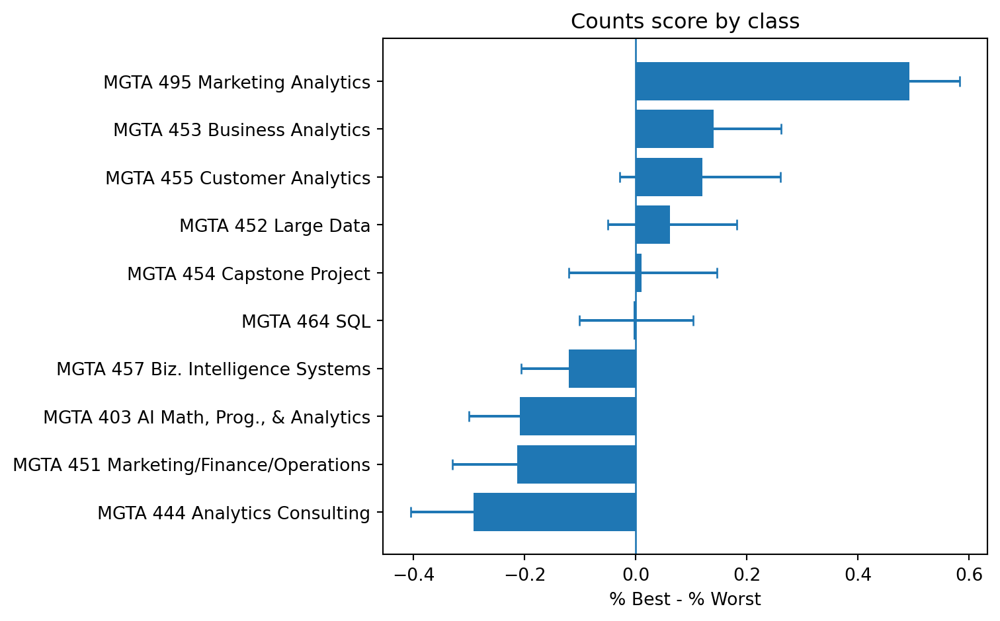
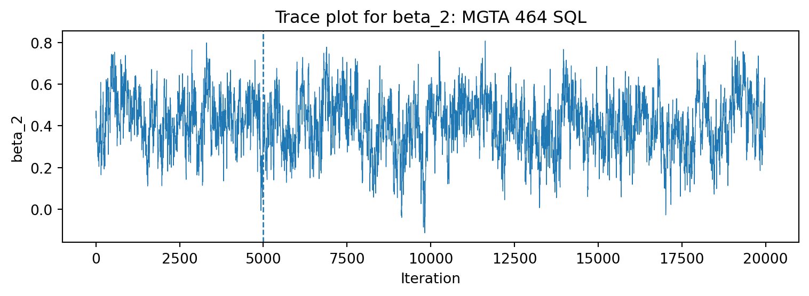
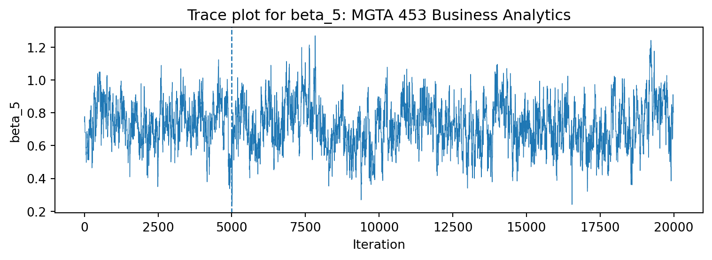
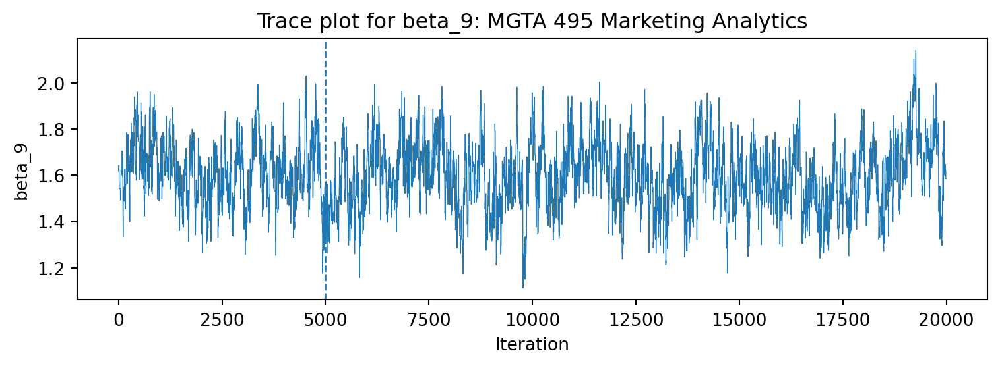
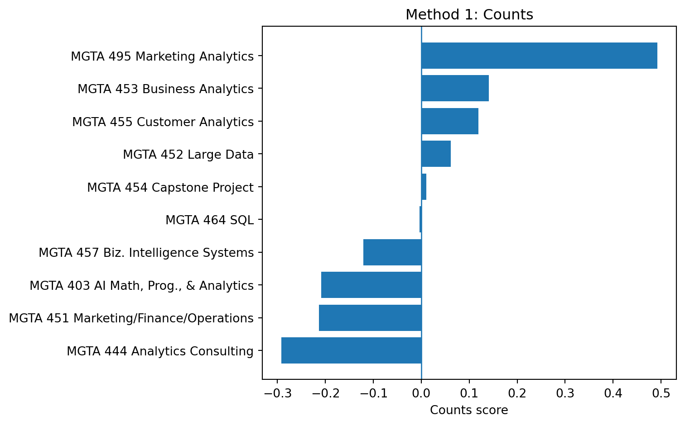
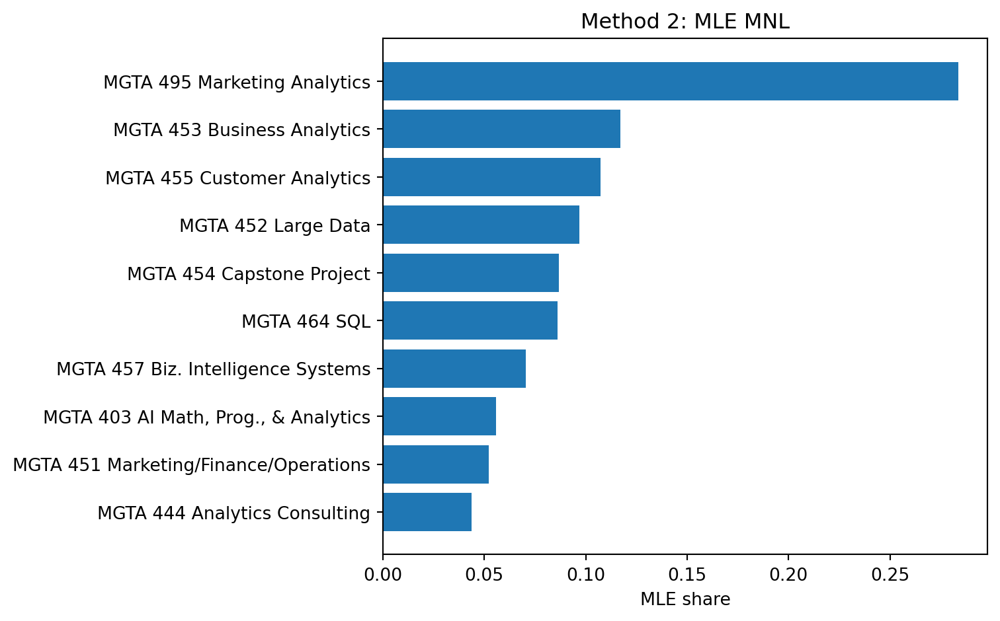
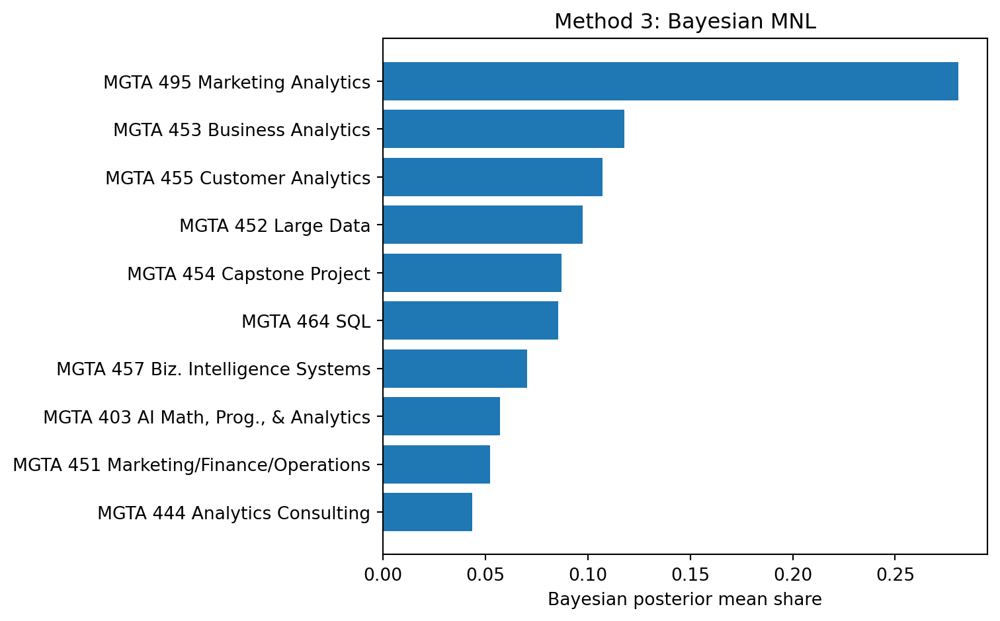

| Item | label | short_label | |
|---|---|---|---|
| 0 | 1 | MGTA 403 AI Math, Prog., & Analytics (Summer w... | MGTA 403 AI Math, Prog., & Analytics |
| 1 | 2 | MGTA 464 SQL (Summer with Nijs) | MGTA 464 SQL |
| 2 | 3 | MGTA 451 Marketing/Finance/Operations (Summer ... | MGTA 451 Marketing/Finance/Operations |
| 3 | 4 | MGTA 452 Large Data (Fall with Hansen) | MGTA 452 Large Data |
| 4 | 5 | MGTA 453 Business Analytics (Fall with August) | MGTA 453 Business Analytics |
| 5 | 6 | MGTA 444 Analytics Consulting (Winter with Pet... | MGTA 444 Analytics Consulting |
| 6 | 7 | MGTA 455 Customer Analytics (Winter with Nijs) | MGTA 455 Customer Analytics |
| 7 | 8 | MGTA 454 Capstone Project (Spring with Advisor) | MGTA 454 Capstone Project |
| 8 | 9 | MGTA 495 Marketing Analytics (Spring with Yavo... | MGTA 495 Marketing Analytics |
| 9 | 10 | MGTA 457 Biz. Intelligence Systems (Fall with ... | MGTA 457 Biz. Intelligence Systems |
MaxDiff Analysis of MSBA Class Preferences
Counts, MLE, and Bayesian estimation of the MNL model
Introduction
MaxDiff, also called Best-Worst Scaling, is a survey method for measuring relative preferences. Instead of asking respondents to rate every class on a 1–10 scale, MaxDiff shows a small set of items and asks for the best and worst item in that set. This is useful because people are usually better at making trade-offs than at using numeric rating scales consistently.
In this survey, the items are core MSBA classes at UCSD Rady. Class preferences are estimated three ways. First, a simple counts score is used: the percent of times a class is selected best minus the percent of times it is selected worst. Second, a multinomial logit model is fit using maximum likelihood. Third, the same model is estimated using a Bayesian random-walk Metropolis sampler. The goal is not just to get rankings, but also to see what each method adds.
The expectation is that all three methods should mostly agree, especially for the most and least preferred classes. The biggest differences should appear in the middle of the ranking, where the classes are closer together.
The Data
The raw data file contains one row per item shown on a survey screen. The important columns are the respondent ID, task number, position on the screen, item number, and response. A response of 1 means the item was selected as best, -1 means it was selected as worst, and 0 means it was shown but not selected.
The item label file contains 10 class titles, so the MaxDiff model should use item numbers 1 through 10. Before modeling, each respondent-task combination was checked for the expected structure: 4 rows, exactly one best choice, exactly one worst choice, and two non-selected rows.
| n_rows | n_best | n_worst | n_zero | min_item | max_item | n_tasks | |
|---|---|---|---|---|---|---|---|
| 16 | 4 | 1 | 1 | 2 | 1 | 10 | 90 |
| 15 | 4 | 1 | 1 | 2 | 1 | 9 | 72 |
| 9 | 2 | 1 | 0 | 1 | 10 | 11 | 68 |
| 22 | 4 | 1 | 1 | 2 | 2 | 10 | 67 |
| 1 | 2 | 1 | 0 | 1 | 2 | 11 | 66 |
| 3 | 2 | 1 | 0 | 1 | 4 | 11 | 62 |
| 0 | 2 | 1 | 0 | 1 | 1 | 11 | 59 |
| 6 | 2 | 1 | 0 | 1 | 7 | 11 | 59 |
| 7 | 2 | 1 | 0 | 1 | 8 | 11 | 58 |
| 4 | 2 | 1 | 0 | 1 | 5 | 11 | 57 |
| 8 | 2 | 1 | 0 | 1 | 9 | 11 | 56 |
| 5 | 2 | 1 | 0 | 1 | 6 | 11 | 56 |
| 2 | 2 | 1 | 0 | 1 | 3 | 11 | 54 |
| 27 | 4 | 1 | 1 | 2 | 3 | 10 | 48 |
| 14 | 4 | 1 | 1 | 2 | 1 | 8 | 44 |
| 21 | 4 | 1 | 1 | 2 | 2 | 9 | 41 |
| 26 | 4 | 1 | 1 | 2 | 3 | 9 | 36 |
| 13 | 4 | 1 | 1 | 2 | 1 | 7 | 33 |
| 20 | 4 | 1 | 1 | 2 | 2 | 8 | 30 |
| 31 | 4 | 1 | 1 | 2 | 4 | 10 | 30 |
| 19 | 4 | 1 | 1 | 2 | 2 | 7 | 27 |
| 12 | 4 | 1 | 1 | 2 | 1 | 6 | 23 |
| 30 | 4 | 1 | 1 | 2 | 4 | 9 | 21 |
| 34 | 4 | 1 | 1 | 2 | 5 | 10 | 19 |
| 25 | 4 | 1 | 1 | 2 | 3 | 8 | 18 |
| 29 | 4 | 1 | 1 | 2 | 4 | 8 | 15 |
| 24 | 4 | 1 | 1 | 2 | 3 | 7 | 12 |
| 33 | 4 | 1 | 1 | 2 | 5 | 9 | 11 |
| 18 | 4 | 1 | 1 | 2 | 2 | 6 | 11 |
| 11 | 4 | 1 | 1 | 2 | 1 | 5 | 9 |
| 36 | 4 | 1 | 1 | 2 | 6 | 10 | 9 |
| 32 | 4 | 1 | 1 | 2 | 5 | 8 | 3 |
| 35 | 4 | 1 | 1 | 2 | 6 | 9 | 3 |
| 37 | 4 | 1 | 1 | 2 | 7 | 10 | 3 |
| 10 | 4 | 1 | 1 | 2 | 1 | 4 | 2 |
| 17 | 4 | 1 | 1 | 2 | 2 | 5 | 1 |
| 28 | 4 | 1 | 1 | 2 | 4 | 7 | 1 |
| 23 | 4 | 1 | 1 | 2 | 3 | 6 | 1 |
The sanity check shows that not every screen is a valid 4-item MaxDiff task. Tasks 1–8 are valid MaxDiff screens. Tasks 9–15 have only two rows, include an unlabeled item 11, and do not contain a worst choice. Since the assignment is about a 10-item MaxDiff design, the analysis filters the data to the valid MaxDiff tasks only.
| quantity | value | |
|---|---|---|
| 0 | respondents | 85 |
| 1 | valid tasks per respondent | 8 |
| 2 | items per valid task | 4 |
| 3 | total labeled items | 10 |
| 4 | valid MaxDiff tasks | 680 |
| 5 | excluded non-MaxDiff tasks | 595 |
The valid analysis sample has 85 respondents, 8 MaxDiff tasks per respondent, and 4 items per task.
The exposure counts are reasonably balanced across the 10 classes.
| Item | short_label | times_shown | |
|---|---|---|---|
| 0 | 1 | MGTA 403 AI Math, Prog., & Analytics | 273 |
| 1 | 2 | MGTA 464 SQL | 274 |
| 2 | 3 | MGTA 451 Marketing/Finance/Operations | 272 |
| 3 | 4 | MGTA 452 Large Data | 276 |
| 4 | 5 | MGTA 453 Business Analytics | 270 |
| 5 | 6 | MGTA 444 Analytics Consulting | 267 |
| 6 | 7 | MGTA 455 Customer Analytics | 276 |
| 7 | 8 | MGTA 454 Capstone Project | 272 |
| 8 | 9 | MGTA 495 Marketing Analytics | 274 |
| 9 | 10 | MGTA 457 Biz. Intelligence Systems | 266 |
Counts Analysis
The counts analysis is the simplest way to summarize the data. For each class, the percent of times it was picked as best and the percent of times it was picked as worst are calculated. The score is
\[ \text{score}_j = \%\text{best}_j - \%\text{worst}_j. \]
A positive score means the class is selected best more often than worst. A negative score means the opposite.
Show code
def counts_table(data):
out = (
data.groupby("Item")
.agg(
times_shown=("Item", "size"),
times_best=("Response", lambda x: (x == 1).sum()),
times_worst=("Response", lambda x: (x == -1).sum())
)
.reindex(labels["Item"])
.reset_index()
)
out["pct_best"] = out["times_best"] / out["times_shown"]
out["pct_worst"] = out["times_worst"] / out["times_shown"]
out["counts_score"] = out["pct_best"] - out["pct_worst"]
out = out.merge(labels, on="Item")
out["counts_rank"] = out["counts_score"].rank(method="min", ascending=False).astype(int)
return out
counts = counts_table(maxdiff)
counts_display = counts.sort_values("counts_score", ascending=False).copy()
counts_display[["pct_best", "pct_worst", "counts_score"]] = counts_display[["pct_best", "pct_worst", "counts_score"]].round(3)
display(counts_display[[
"Item", "short_label", "times_shown", "times_best", "times_worst",
"pct_best", "pct_worst", "counts_score", "counts_rank"
]])| Item | short_label | times_shown | times_best | times_worst | pct_best | pct_worst | counts_score | counts_rank | |
|---|---|---|---|---|---|---|---|---|---|
| 8 | 9 | MGTA 495 Marketing Analytics | 274 | 147 | 12 | 0.536 | 0.044 | 0.493 | 1 |
| 4 | 5 | MGTA 453 Business Analytics | 270 | 93 | 55 | 0.344 | 0.204 | 0.141 | 2 |
| 6 | 7 | MGTA 455 Customer Analytics | 276 | 104 | 71 | 0.377 | 0.257 | 0.120 | 3 |
| 3 | 4 | MGTA 452 Large Data | 276 | 77 | 60 | 0.279 | 0.217 | 0.062 | 4 |
| 7 | 8 | MGTA 454 Capstone Project | 272 | 72 | 69 | 0.265 | 0.254 | 0.011 | 5 |
| 1 | 2 | MGTA 464 SQL | 274 | 55 | 56 | 0.201 | 0.204 | -0.004 | 6 |
| 9 | 10 | MGTA 457 Biz. Intelligence Systems | 266 | 23 | 55 | 0.086 | 0.207 | -0.120 | 7 |
| 0 | 1 | MGTA 403 AI Math, Prog., & Analytics | 273 | 33 | 90 | 0.121 | 0.330 | -0.209 | 8 |
| 2 | 3 | MGTA 451 Marketing/Finance/Operations | 272 | 43 | 101 | 0.158 | 0.371 | -0.213 | 9 |
| 5 | 6 | MGTA 444 Analytics Consulting | 267 | 33 | 111 | 0.124 | 0.416 | -0.292 | 10 |

The counts analysis has MGTA 495 Marketing Analytics clearly on top. MGTA 453 Business Analytics and MGTA 455 Customer Analytics are next, but much closer to the middle than Marketing Analytics. The least preferred class by this score is MGTA 444 Analytics Consulting, followed by MGTA 451 and MGTA 403.
From MaxDiff Data to MNL Choices
For the MNL model, each item gets a utility coefficient \(\beta_j\). If a respondent sees items \(\{a,b,c,d\}\), the probability of selecting item \(b\) as best is
\[ P(\text{best}=b)=\frac{\exp(\beta_b)}{\exp(\beta_a)+\exp(\beta_b)+\exp(\beta_c)+\exp(\beta_d)}. \]
The worst choice is modeled after the best item is removed. Since the worst item is the least attractive option, the utilities are flipped:
\[ P(\text{worst}=c \mid \text{best}=b)= \frac{\exp(-\beta_c)}{\sum_{j \in \text{shown}\setminus b}\exp(-\beta_j)}. \]
The model is identified only up to an additive constant, so \(\beta_1 = 0\) is fixed and \(\beta_2\) through \(\beta_{10}\) are estimated. This makes item 1 the reference item. The shares of preference are easier to interpret than the raw utilities because they sum to 1 across the 10 classes.
(array([[4, 6, 3, 0],
[7, 2, 9, 8],
[2, 4, 1, 5]]),
array([6, 9, 1]),
array([0, 7, 5]))MNL via Maximum Likelihood
The log-likelihood sums the best-choice probability and the conditional worst-choice probability over all valid MaxDiff tasks:
\[ \ell(\boldsymbol\beta)= \sum_{\text{tasks}}\left[ \beta_{j_b^*}-\log\sum_{j\in \text{shown}}\exp(\beta_j) -\beta_{j_w^*}-\log\sum_{j\in \text{shown}\setminus\{j_b^*\}}\exp(-\beta_j) \right]. \]
Show code
def expand_beta(theta):
# theta has 9 values; beta_1 is fixed to zero.
return np.r_[0, theta]
def logsumexp_rows(A):
m = np.max(A, axis=1)
return m + np.log(np.exp(A - m[:, None]).sum(axis=1))
def loglik(theta):
beta = expand_beta(theta)
B = beta[items]
best_part = beta[best] - logsumexp_rows(B)
W = -B.copy()
W[~keep_mask] = -np.inf
worst_part = -beta[worst] - logsumexp_rows(W)
return float(np.sum(best_part + worst_part))
def neg_loglik(theta):
return -loglik(theta)Show code
(True, 1572.7307327633503)For standard errors, a simple finite-difference Hessian of the negative log-likelihood is evaluated at the optimum. The reference item has no standard error because it is fixed to zero.
| Item | short_label | mle_beta | mle_se | mle_share | mle_rank | |
|---|---|---|---|---|---|---|
| 8 | 9 | MGTA 495 Marketing Analytics | 1.630 | 0.146 | 0.284 | 1 |
| 4 | 5 | MGTA 453 Business Analytics | 0.744 | 0.142 | 0.117 | 2 |
| 6 | 7 | MGTA 455 Customer Analytics | 0.656 | 0.142 | 0.107 | 3 |
| 3 | 4 | MGTA 452 Large Data | 0.555 | 0.140 | 0.097 | 4 |
| 7 | 8 | MGTA 454 Capstone Project | 0.443 | 0.140 | 0.087 | 5 |
| 1 | 2 | MGTA 464 SQL | 0.438 | 0.137 | 0.086 | 6 |
| 9 | 10 | MGTA 457 Biz. Intelligence Systems | 0.236 | 0.137 | 0.070 | 7 |
| 0 | 1 | MGTA 403 AI Math, Prog., & Analytics | 0.000 | NaN | 0.056 | 8 |
| 2 | 3 | MGTA 451 Marketing/Finance/Operations | -0.067 | 0.139 | 0.052 | 9 |
| 5 | 6 | MGTA 444 Analytics Consulting | -0.239 | 0.141 | 0.044 | 10 |
The MLE ranking matches the counts ranking exactly in this data. Marketing Analytics has the largest share of preference by a wide margin. The next group is Business Analytics, Customer Analytics, Large Data, Capstone, and SQL. The bottom group is Business Intelligence Systems, AI Math/Programming/Analytics, Marketing/Finance/Operations, and Analytics Consulting.
MNL via Bayesian Estimation
For the Bayesian version, the same likelihood is used with a weakly informative normal prior:
\[ \boldsymbol\beta \sim N(\boldsymbol 0, 10I). \]
Posterior samples are generated using a random-walk Metropolis-Hastings algorithm. The chain starts at the MLE, which is a convenient high-density starting point.
Show code
rng = np.random.default_rng(123)
prior_sd = np.sqrt(10)
# This prior is on the nine free beta parameters.
def log_prior(theta):
return np.sum(-0.5 * np.log(2 * np.pi * prior_sd**2) - 0.5 * (theta / prior_sd)**2)
def log_posterior(theta):
return loglik(theta) + log_prior(theta)
def mh_sampler(beta0, n_iter=20000, step=0.08, seed=123):
rng = np.random.default_rng(seed)
K_free = len(beta0)
draws = np.empty((n_iter, K_free))
beta = beta0.copy()
lp = log_posterior(beta)
accept = 0
for t in range(n_iter):
proposal = beta + rng.normal(0, step, K_free)
lp_proposal = log_posterior(proposal)
if np.log(rng.random()) < lp_proposal - lp:
beta = proposal
lp = lp_proposal
accept += 1
draws[t, :] = beta
return draws, accept / n_iterShow code
| step | accept_rate | |
|---|---|---|
| 0 | 0.04 | 0.5735 |
| 1 | 0.06 | 0.3980 |
| 2 | 0.08 | 0.2780 |
| 3 | 0.10 | 0.1750 |
| 4 | 0.12 | 0.1195 |
A step size of 0.08 gives an acceptance rate in the target range, so it is used for the final chain.
Show code
0.288


The trace plots look like stable fuzzy caterpillars after burn-in rather than chains with a long directional drift. The final acceptance rate is around 25–40%, so the step size is reasonable for this simple random-walk sampler.
| Item | short_label | bayes_beta_mean | bayes_beta_sd | bayes_beta_lo | bayes_beta_hi | bayes_share | bayes_share_lo | bayes_share_hi | bayes_rank | |
|---|---|---|---|---|---|---|---|---|---|---|
| 8 | 9 | MGTA 495 Marketing Analytics | 1.595 | 0.149 | 1.313 | 1.897 | 0.281 | 0.239 | 0.324 | 1 |
| 4 | 5 | MGTA 453 Business Analytics | 0.724 | 0.143 | 0.448 | 0.992 | 0.118 | 0.096 | 0.142 | 2 |
| 6 | 7 | MGTA 455 Customer Analytics | 0.629 | 0.136 | 0.373 | 0.897 | 0.107 | 0.088 | 0.127 | 3 |
| 3 | 4 | MGTA 452 Large Data | 0.536 | 0.135 | 0.280 | 0.808 | 0.098 | 0.081 | 0.117 | 4 |
| 7 | 8 | MGTA 454 Capstone Project | 0.423 | 0.142 | 0.157 | 0.693 | 0.087 | 0.071 | 0.105 | 5 |
| 1 | 2 | MGTA 464 SQL | 0.406 | 0.136 | 0.132 | 0.672 | 0.086 | 0.070 | 0.103 | 6 |
| 9 | 10 | MGTA 457 Biz. Intelligence Systems | 0.211 | 0.134 | -0.054 | 0.469 | 0.071 | 0.058 | 0.084 | 7 |
| 0 | 1 | MGTA 403 AI Math, Prog., & Analytics | 0.000 | 0.000 | 0.000 | 0.000 | 0.057 | 0.047 | 0.069 | 8 |
| 2 | 3 | MGTA 451 Marketing/Finance/Operations | -0.086 | 0.137 | -0.355 | 0.181 | 0.052 | 0.042 | 0.064 | 9 |
| 5 | 6 | MGTA 444 Analytics Consulting | -0.269 | 0.143 | -0.546 | 0.012 | 0.044 | 0.035 | 0.053 | 10 |
The Bayesian estimates are very close to the MLE estimates. This makes sense because the sample is not tiny and the prior is weak. The biggest benefit of the Bayesian approach here is that uncertainty for shares is easy: the share is computed for every posterior draw and then those simulated shares are summarized directly.
Comparing the Three Methods
| Item | short_label | counts_score | counts_rank | mle_share | mle_rank | bayes_share | bayes_rank | |
|---|---|---|---|---|---|---|---|---|
| 8 | 9 | MGTA 495 Marketing Analytics | 0.493 | 1 | 0.284 | 1 | 0.281 | 1 |
| 4 | 5 | MGTA 453 Business Analytics | 0.141 | 2 | 0.117 | 2 | 0.118 | 2 |
| 6 | 7 | MGTA 455 Customer Analytics | 0.120 | 3 | 0.107 | 3 | 0.107 | 3 |
| 3 | 4 | MGTA 452 Large Data | 0.062 | 4 | 0.097 | 4 | 0.098 | 4 |
| 7 | 8 | MGTA 454 Capstone Project | 0.011 | 5 | 0.087 | 5 | 0.087 | 5 |
| 1 | 2 | MGTA 464 SQL | -0.004 | 6 | 0.086 | 6 | 0.086 | 6 |
| 9 | 10 | MGTA 457 Biz. Intelligence Systems | -0.120 | 7 | 0.070 | 7 | 0.071 | 7 |
| 0 | 1 | MGTA 403 AI Math, Prog., & Analytics | -0.209 | 8 | 0.056 | 8 | 0.057 | 8 |
| 2 | 3 | MGTA 451 Marketing/Finance/Operations | -0.213 | 9 | 0.052 | 9 | 0.052 | 9 |
| 5 | 6 | MGTA 444 Analytics Consulting | -0.292 | 10 | 0.044 | 10 | 0.044 | 10 |



The three methods agree exactly on the ranking in this cleaned MaxDiff sample. That agreement is strongest because Marketing Analytics is far ahead of the rest, and Analytics Consulting is clearly at the bottom. There is less separation in the middle, especially between Capstone and SQL, so those ranks would be easier to flip in another sample.
The MNL model adds structure beyond counts because it explicitly models the probability of each best and worst choice from the specific set of alternatives shown on that task. The Bayesian model gives similar point estimates, but it makes uncertainty for derived quantities, such as shares of preference, very natural.
Discussion
The main substantive finding is that MGTA 495 Marketing Analytics is the most preferred class in this survey by a large margin. MGTA 453 Business Analytics and MGTA 455 Customer Analytics also rank highly. On the other end, MGTA 444 Analytics Consulting, MGTA 451 Marketing/Finance/Operations, and MGTA 403 AI Math/Programming/Analytics are the least preferred in this sample.
For a quick dashboard, the counts score is useful because it is easy to explain. For a formal model-based estimate, the MLE MNL is stronger because it is directly tied to the choice process. For uncertainty around shares or future extensions, the Bayesian MNL is the most flexible. The Bayesian approach would also be the natural next step for building a hierarchical model that estimates both population-level and student-level preferences.
There are several caveats. The respondents are a self-selected group of MSBA students, so the results may not generalize to all students. Preferences may also depend on timing, previous coursework, instructor familiarity, and whether students have already taken a class. With more time, a useful extension would compare preferences across student segments and investigate why tasks 9–15 in the raw file have a different structure from the valid MaxDiff tasks.